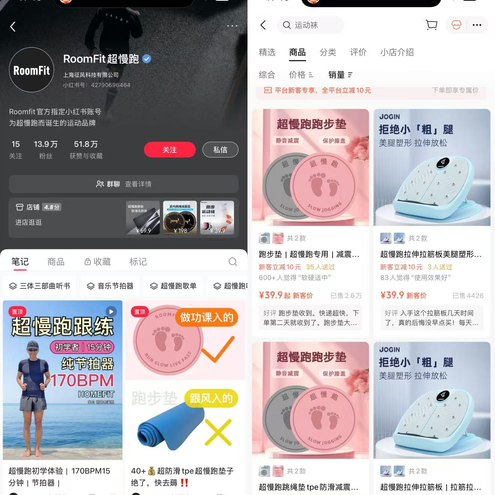
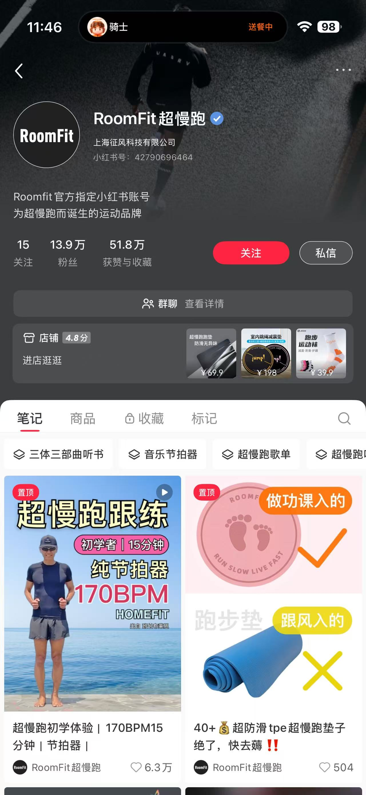
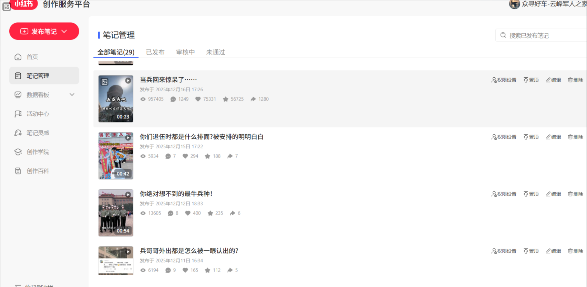
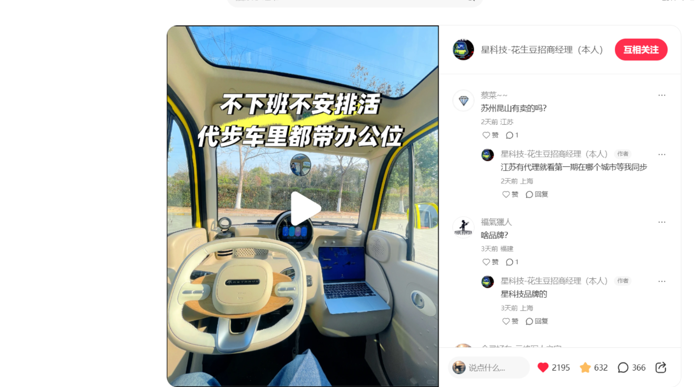

01 / 品牌内容运营
把「超慢跑」
做成日常内容
运动户外品牌矩阵运营
围绕超慢跑、跟练和听书做系列选题，在小红书、抖音和视频号运营品牌内容。
- 我的工作
- 选题策划、内容制作、账号运营，以及评论区和私域反馈整理。
- 内容实践
- 把运动方式拆成可以跟着做的内容，再根据用户反馈调整下一期选题。
小红书 / 抖音 / 视频号

01 / 品牌内容运营
运动户外品牌矩阵运营
围绕超慢跑、跟练和听书做系列选题，在小红书、抖音和视频号运营品牌内容。
小红书 / 抖音 / 视频号

02 / 活动策划
达人联动拉新活动
围绕运动产品策划新客优惠活动，协调达人内容发布，跟进活动节奏和转化反馈。
活动策划 / 达人协作

03 / 短视频编导
军人、汽车与招商类内容
为不同垂类账号做选题、脚本和剪辑。结合评论区的问题与后台反馈，调整内容角度，跟进汽车和招商类内容带来的咨询。
选题 / 脚本 / 剪辑 / 复盘


04 / 企业内容营销
B 端 AI 场景化内容
围绕「AI 如何赋能销售」策划系列内容，从销售工作中的具体问题切入，解释产品可以怎么用。
场景选题 / 脚本测试 / 企业客户沟通
关于我
本科读市场营销，后来把更多时间放在新媒体内容上。做过品牌账号，也做过汽车、招商等垂类的短视频。
我能从选题、脚本一路做到拍摄、剪辑和复盘，也会和产品、销售、设计同事一起推进项目。
比起给自己贴很多标签，我更愿意把做过的东西放在这里，慢慢补充。
联系